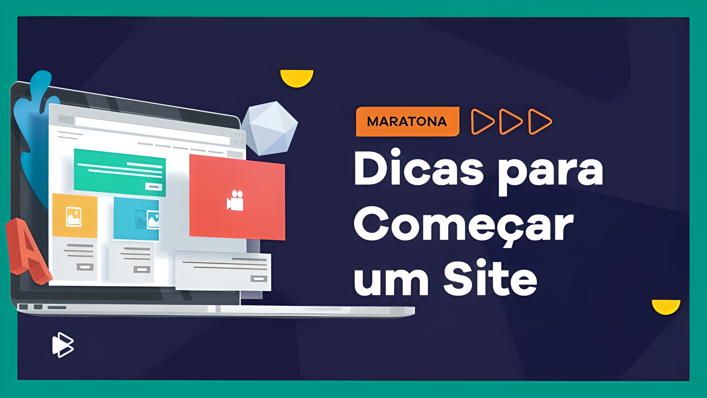

Planejamento para criação de sites
Guia de criação de sites
Você provavelmente está lendo aqui por que esta pensando em fazer um novo site, se é a primeira vez muitas dúvidas podem surgir, e caso isso aconteça, pode entrar em contato com a gente. Mas antes pode avaliar cada etapa do nosso passo-a-passo:
Construir um site confiávele profissional exige uma série de conhecimentos em algumas áreas como design, comunicação, marketing, tecnologia, usabilidade, programação. Não precisa ser especialista em todas as áreas mas é fundamental ter uma boa noção ou contar com alguém que possa ajudar no desenvolvimento.
Também não existe uma receita para o sucesso, mas um conjunto de boas práticas que quando bem executadas potencializam as chances de vocÇe construir um site poderoso. E no primeiro passo, neste posto falaremos sobre as etapas básicas do planejamento.
Planejamento
Definição geral e protótipo do site.
É uma etapa bem abrangente pois é nela que deverão ser definidos todos os aspectos do projeto e é fundamental começar respondendo algumas perguntas como:
1. Quem vai acessar o site?
Qual seria o perfil do público que estaria interessado em acessar o seu site e obter informações ou mesmo comprar seus produtos?
O principal nesta etapa é conhecer e tentar entender ao máximo os possíveis usuários do seu site, o que elas fazem, qual tipo de linguagem seria mais apropriado para falar diretametne com elas?
Essas pessoas visualizariam seu site mais no computador ou no smartphone? Busque informações precisas em fontes confiáveis, acesse sites de concorrente diretos e indiretos, avalie desing, interação, tempo de reposta, linguagem...
2. Qual o tipo de site mais apropriado?
Se será um site institucional, um blog, um portal, uma loja virtual, entre outros.
Você precisa disponibilizar apenas suas informações básicas de contato? Precisa publicar contéudo constantemente? Precisa vender pelo site? Precisa conectar pessoas? Disponibilizar algum serviço online?
3. Quais funcionalidades serão necessárias?
Seu site precisa de quais recursos para ser relevante para seus usuários?
Você precisará, por exemplo, de um mecanismo de busca interna, um formulário de contato, um mapa interativo, galeria de imagens? O ideal é levantar e classificar as referências.
4. Comece a produção!
Com as respostas das perguntas acima, certamente a ideia de onde quer se chegar estará mais clara. Então você conseguefazer um esboço do seu projeto?
Você pode começar:
- Desenhando a estrutura do seu site na mão ou em qualquer software de produção gráfica de sua preferência.
- Escrevendo os textos de todas as paginas e seções do site
- Pesquisar ou produzir fotos ou vídeos enriquece o contéudo do site.
se quiser pode compartilhar seu resultado com a gente. Non próximo posto vamos continuar com o nosso guia de criação de sites, falando sobre os aspectos técnicos do desenvolvimento do seu site.